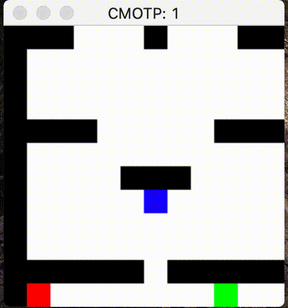
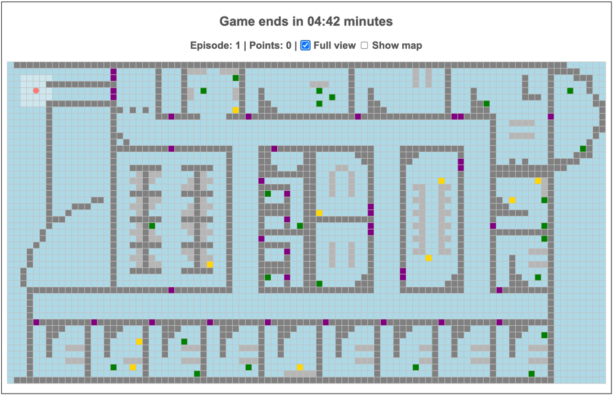
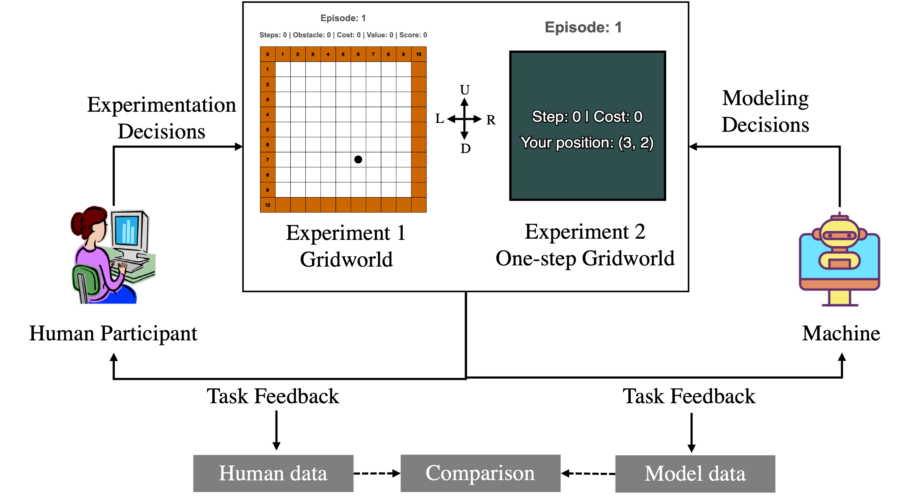
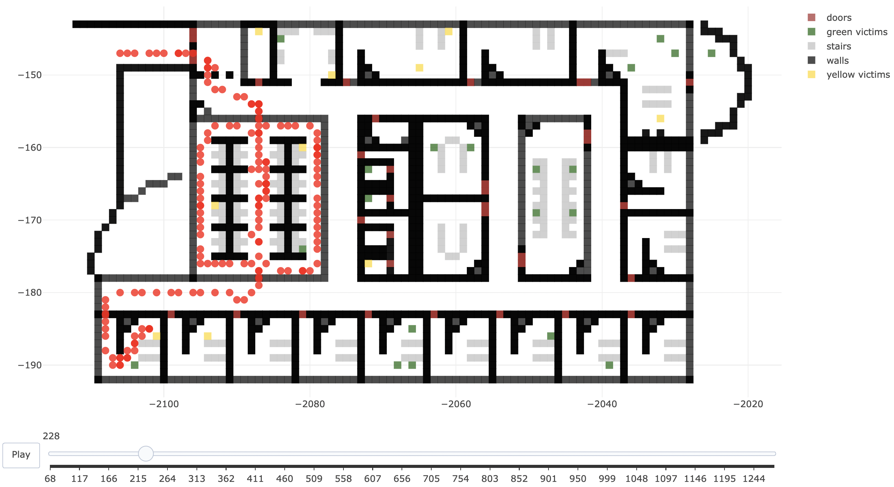
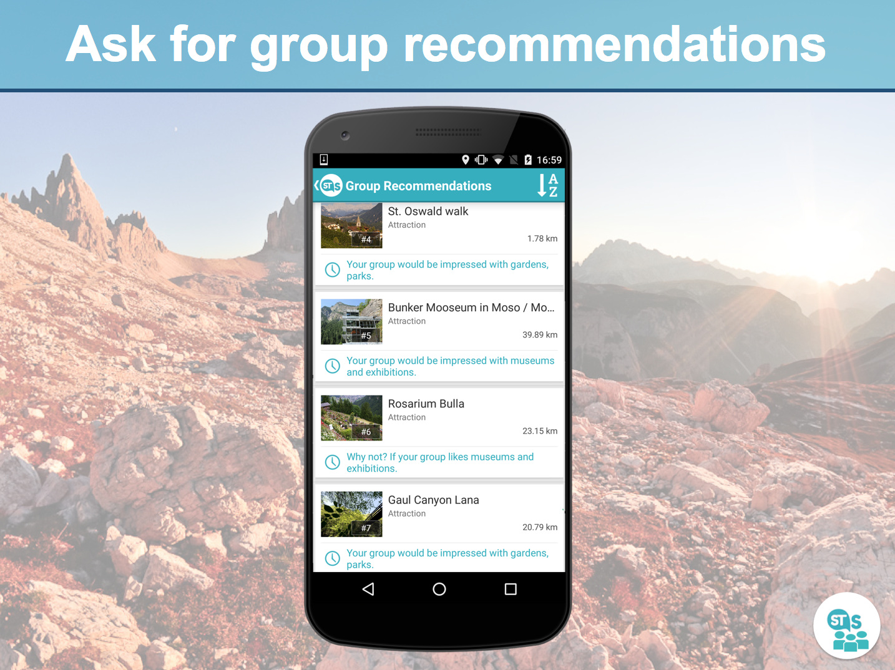

Ngoc Nguyen
- Assistant Professor, University of Dayton
- Email: ngoc.nguyenATudayton.edu

Welcome! I am an Assistant Professor at the Department of Computer Science at University of Dayton, OH.
My research is broadly connected to the fields of artificial intelligence (AI) and machine learning, human-computer interaction, cognitive science, and computational social sciences.
I use both experimental and computational approaches to understand how people learn to make decisions under uncertainty and how to design AI-powered systems that effectively support human decision-making processes and are helpful for humans to collaborate with when making joint decisions.
Prior to the University of Dayton, I spent three years as a postdoctoral fellow at Carnegie Mellon University’s Dynamic Decision Making Lab (DDMLab) and six months as a Visiting Faculty Lecturer at the Miner School of Computer & Information Sciences, University of Massachusetts Lowell. I hold a Ph.D. in Computer Science from the Faculty of Computer Science at the Free University of Bozen-Bolzano, Italy, for research on supporting group decision-making processes with recommendation techniques.
Research Interests: My research interests include personalized, adaptive systems; computational modeling of human behavior; artificial intelligence; human-AI interaction; and machine learning.
Prior to the University of Dayton, I spent three years as a postdoctoral fellow at Carnegie Mellon University’s Dynamic Decision Making Lab (DDMLab) and six months as a Visiting Faculty Lecturer at the Miner School of Computer & Information Sciences, University of Massachusetts Lowell. I hold a Ph.D. in Computer Science from the Faculty of Computer Science at the Free University of Bozen-Bolzano, Italy, for research on supporting group decision-making processes with recommendation techniques.
Research Interests: My research interests include personalized, adaptive systems; computational modeling of human behavior; artificial intelligence; human-AI interaction; and machine learning.
News
- Feb 2024: Received Research Council Seed Grant (competitive internal research grant)
- Jan 2024: Received UD-UDRI Summer Research Fellowship
Research Projects

Cognitive and Machine Learning Models for Cooperative Multiagent Systems
Developing effective multi-agent systems (MAS) is crucial for applications requiring collaboration with humans. We propose multi-agent Instance-based Learning (MAIBL) models that integrate cognitive mechanisms with multi-agent deep reinforcement learning (MADRL) techniques, demonstrating faster learning and improved coordination in dynamic, stochastic environments.
[Code]
[Paper]

Interactive Decision Making Games for Behavioral and Human-AI Research
In this work, we developed a dynamic interactive game for multi-step goal-directed decision making tasks. It offers customization, experimental scenario creation, and visualization tools for analyzing human decision-making.
[Code]
[Demo]
[Paper]
[Interactive Gridworld]
[One-step Gridworld]

Credit Assignment for Developing Human-like Learning Agents
We used a cognitive model based on Instance-Based Learning Theory (IBLT) and Temporal Difference techniques to investigates various credit assignment mechanisms and compares them with human decision-making.
[Code]
[Demo]
[Paper]

Visualizing Human Strategies in Minecraft Search and Rescue Missions
This project processes data to visualize human participants playing a search and rescue task in Minecraft on a 2D map, aiming to learn about human behavior structures in complex navigation tasks.
[Code]
[Demo]

A chat-based group recommender system
This project developed a chat-based group recommender system for suggesting points of interest (POIs) to groups, implemented as an Android mobile application. It explored how an individual’s conflict resolution style affected their receptivity to group recommendations.
[Demo]